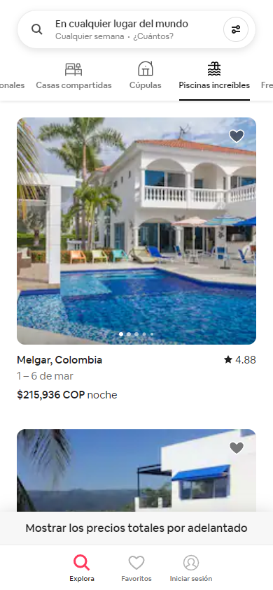

White Space and Clean Design
Uber
The White Space and Clean Design principle emphasizes the use of uncluttered layouts and ample white space to simplify the user experience and create a clear visual hierarchy. Uber.com is an excellent example of this design approach, with its minimalist aesthetic, simple navigation menu, large images, and limited use of text. By using a clean and uncluttered design, Uber.com creates a visually appealing and user-friendly website that guides the user through the key elements. This approach helps to emphasize the most important aspects of the website and simplifies the user experience, making it easier for visitors to understand and engage with the content.
Fitts' Law
Airbnb
Fitts' Law is a design principle that states that the time required to reach a target area is a function of the distance to the target and the size of the target. It is commonly applied to user interface design, where it is used to make interactive elements easier to use. Airbnb.com exemplifies this design principle by using large, easy-to-click buttons and links, with plenty of space around them. This makes it easier for users to find and click on the buttons they need, reducing the likelihood of errors and increasing the speed at which they can navigate the website. Additionally, the use of clear and concise labels also helps users to quickly understand what each button or link does.
Contrast
Spotify
Contrast is a design principle that uses contrasting elements to create visual interest and draw attention. Spotify.com exemplifies this principle with its use of contrasting colors and typography. The website features bold typography for section headings, which creates a visual hierarchy and highlights important information. Spotify also uses contrasting background colors for different pages and sections, helping to differentiate them from each other and create visual interest. This approach creates a visually dynamic and engaging website that is easy to navigate and use. Overall, Spotify's use of contrast helps to create a memorable and enjoyable user experience.